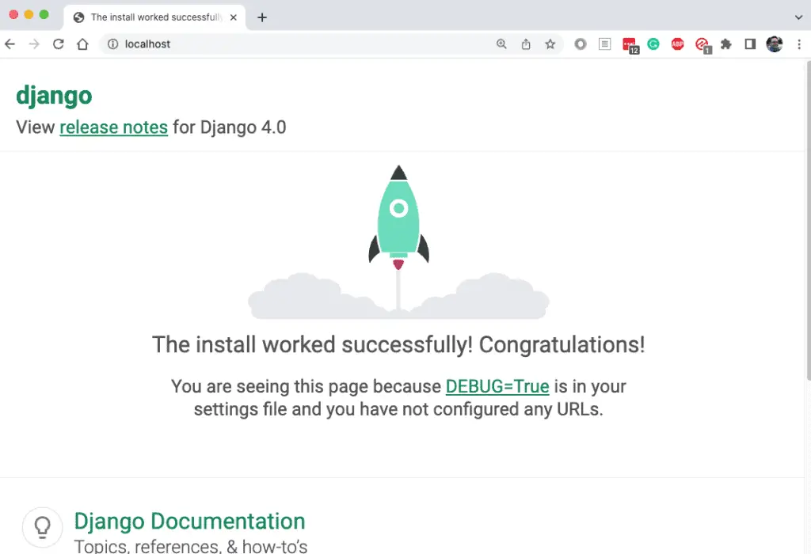
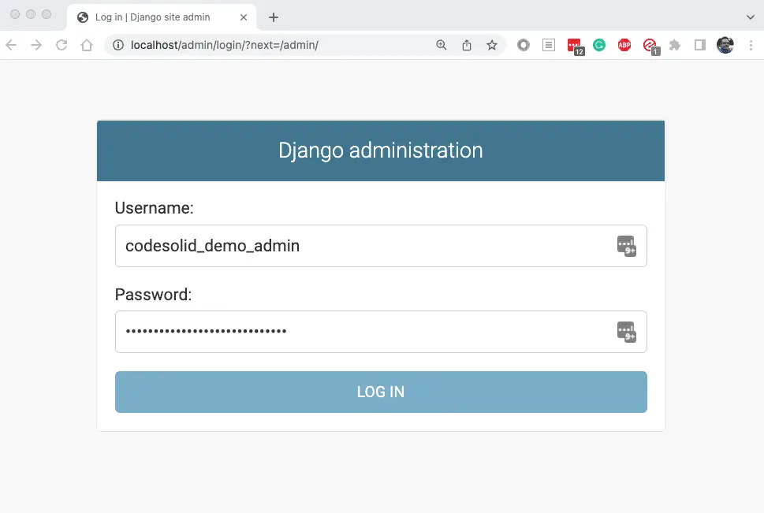
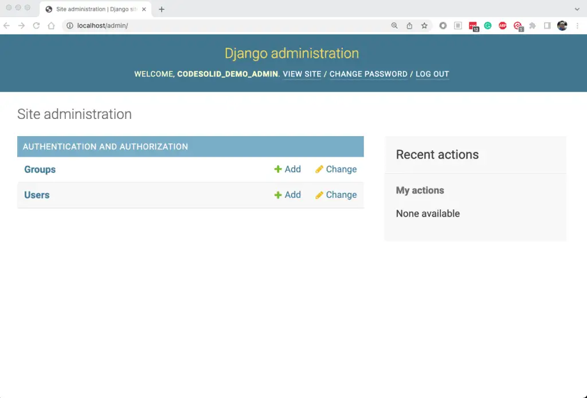

How To Use Docker Python Images and Docker Compose With Python¶
Docker and Python are two great tools that work great together to simplify the development and deployment of an application. Most of my readers are naturally already quite familiar with Python, and I’m sure most are familiar with Docker, but if you’re not, don’t worry.
The answer to can you use Docker with Python is that you most certainly can, and it’s not complicated. Docker allows you to bundle an image – similar to a virtual machine but more lightweight – along with whatever code you wish to ship. Hence, it’s an excellent platform for running Python processes.
This tutorial teaches you how to use Docker with Python. We’ll start with the basics and work through several examples, using docker, the command-line client for the Docker daemon (server), and docker-compose, a tool for building, combining, and networking containers together in various ways.
Python Docker Examples Source Code
Is Docker Important for Python Development¶
Getting started with docker-compose python is not hard. However, before getting into the how of using Docker and Docker-Compose with Python perhaps it makes sense to take a step back and think about the why.
Docker is important for Python development because it is a tool that makes development environments easy to automate on local and remote machines. It also allows the creation of containers that can run in almost any environment including all major cloud vendors and on-premise environments as well.
Moreover, the popularity of Kubernetes and the fact that it is so widely supported by different vendors means the definition of Cloud Native Computing frequently gets associated with Docker and Kubernetes, a fact that the Wikipedia entry acknowledges as well:
Frequently, cloud-native applications are built as a set of microservices that run in Docker containers, and may be orchestrated in Kubernetes…The advantage of using Docker containers is the ability to package all software needed to execute into one executable package. The container runs in a virtualized environment, which isolates the contained application from its environment.
https://en.wikipedia.org/wiki/Cloud_native_computing
All this taken together means that a small investment in mastering Docker is likely to pay substantial dividends throughout your Python career.
First Steps: Installing and Configuring Docker¶
I recommend having Docker installed and ready to work with before you begin to get the most out of this article. If you don’t already have it, visit the Get Docker page to install it. Once you’ve installed Docker, you should be able to go through the Get Started guide, or for the impatient, try going to a command line prompt and running:
docker run hello-world
You should see Docker downloading something and a long message that includes “Hello from Docker!” If that works, you’re ready to go! If that doesn’t work for you, some possible solutions are:
Find the docker application on your system and ensure the Docker Desktop application has started. This will ensure the Docker daemon (background process) is running.
If you see a permissions issue, as you might, especially on Linux, see the optional post-installation steps for running Docker without sudo.
You may be prompted at some point to create a dockerhub account. Another name for hub.docker.com, dockerhub is a repository for sharing public and private docker images. It’s the Docker equivalent of PyPi.org in the Python world.
If those steps don’t get you up and running, you can try the time-honored “paste the error message into Google.” Docker is popular and well supported, so that’s quite likely to turn up the answer.
Basic Docker Concepts¶
Let’s begin with some basic docker concepts and terminology we’ll encounter along the way. As we mentioned before, docker is a combination of two command-line clients and a server (the Docker daemon). Together they allow us to run “containers,” which you can think of as processes that are isolated from the main process space of your computer but are nevertheless much more lightweight and faster than virtual machines.
A Docker container is a running instance of a Docker image. An image, in turn, is a template for building up a set of layers that work together and can be used to run a container. We build an image template from a Docker source file (usually named Dockerfile). The Dockerfile specifies a parent image such as an operating system or other public dockerhub images as a base. In our case, this will be a combination of an operating system and a Python distribution. You can then install other packages or run other commands.
The "docker build” command reads the Dockerfile and constructs an image, which consists of binary layers representing the commands in the file. Docker’s layered image structure means that you only need to download the pieces you need. It also means that to optimize build times, it’s a good idea to put those commands that often change later in the file, since during a build, docker will only change rebuild the parts that have changed and anything later than that in the file.
Once a Docker image is created and is available either locally or on dockerhub, you can run it using “docker run <image_name>”.
The best way to better understand these two basic commands and how to use Dockerfile builds with Python is to walk through our first examples.
The source code for the examples is available in this Github repository. It is also downloadable as a zip file. We’ll walk through it all in the sections that follow.
Running Python Flask in a Docker Container¶
For our first example, let’s see what it takes to run an extremely simple Flask web server application and connect to it from the “host machine” (our computer). The code for this is in the directory, 01-docker-flask.
The steps we need to walk through are straightforward.
We need to select a base docker image to use.
We need to create a simple “Hello World” flask application file.
We need to create a Dockerfile that will install Flask together with our application file and run Flask.
Once we build the image based on the Dockerfile, we need to run it in such a way that we can access it from our desktop.
Selecting a Base Docker Image for Python¶
The Docker community maintains an extensive array of starter images you can use for Python development. These docker images will generally combine a popular Linux base container with a version of Python, so you’ll be ready to install your code and run it. I usually start from the series of docker images for Python with “slim-buster” in the name. These images have the best combination of reasonably small image size, convenience, and ease of use.
Many in the Docker community like to base their images on Alpine, which is even more lightweight. However, working with Alpine is problematic because things often don’t “just work” out of the box. For example, as I just recently confirmed, assuming you’re logged in to dockerhub, “pip install pandas” works brilliantly on the image, python:3.10.4-slim-buster but fails on python:3.10.4-alpine3.15. Therefore, my recommendation for Alpine is to avoid it unless you have a pressing need for it.
Let’s start with our Flask application code, which is very simple as it is based on the Flask Quickstart.
# flaskapp.py
from flask import Flask
app = Flask(__name__)
@app.route("/")
def flask_main():
return "<h1>Flask is running</h1><p>Awesome, that worked. Now add more code.</p>"
Using Flask means we also need to install it into our environment, so here is the requirements.txt file:
flask==2.1.0
A Simple Flask Dockerfile¶
With a simple Flask app ready to run, let’s create a Docker image for it. The following is the code for the Dockerfile, which we’ll discuss in detail:
# Dockerfile
FROM python:3.10.4-slim-buster
RUN pip install --upgrade pip
RUN useradd -m myuser
USER myuser
WORKDIR /home/myuser
COPY --chown=myuser:myuser requirements.txt requirements.txt
COPY --chown=myuser:myuser flaskapp.py flaskapp.py
RUN pip install --user -r requirements.txt
ENV PATH="/home/myuser/.local/bin:${PATH}"
ENV FLASK_APP=flaskapp
ENV FLASK_RUN_PORT=8080
ENV FLASK_RUN_HOST=0.0.0.0
CMD ["flask", "run"]
Make sure you name this “Dockerfile” (capitalized) on case-sensitive file systems. Otherwise, the docker command won’t automatically find it.
On lines 1-2, we’re specifying the base image that we discussed earlier, then upgrading pip as our first step. “RUN” statements get baked into the image as layers, and the target of the RUN command can be any command that’s valid on the base image. By the way, one way to try things out to see if they’ll work is to interactively run a container based on your base image using this command:
docker run -it python:3.10.4-slim-buster /bin/bash
This command will launch a bash terminal in a container based on your image so that you can try out commands inside the container. You don’t want to prefix them with “RUN” because RUN is a docker command statement. For example, you can run “pip install <some_package>” directly. When you’re done experimenting, type “exit” to return to the host terminal prompt.
Returning to the Dockerfile listing, on lines 5-7, we’re adding a user, setting that same user to be the default for any containers that launch, and setting WORKDIR to the user home. From this point on, the other commands in the file will execute in that directory.
Lines 9-10 copy the flaskapp.py and requirements.txt files that we showed earlier to the Docker image, and line 11 installs the requirements.txt file.
Lines 13-16 set up several environment variables to get us ready to run Flask. We set the PATH to refer to “flask” without typing the filename each time. The app name, FLASK_APP, must be set to the name of our Python module. We override the default port and set the FLASK_RUN_HOST to 0.0.0.0 to enable all connections. We need to do this to connect from outside the container, for example, from our host machine. Indeed, it would be a sad web server if we couldn’t connect to it!
Building and Running the Flask Image and Python Docker Container¶
If you happen to have GNU make on your system, you can use the Makefile included in the source repository, but either way, we need to go over the steps you can use in the terminal and what they mean.
Building the Flask Dockerfile to an Image
Our first step is to build the image from the Dockerfile, so in the directory where that and the rest of the source is, run this command:
docker build -t flask-example:latest .
By default, docker build looks for a file named Dockerfile, so we don’t need to specify that explicitly. The part that reads "-t flask-example:latest” is tagging the image so we can refer to it when running a container based on it. Since when we run an image, Docker will pick “latest” as the version by default, we can generally just call it “flask-example” when we get to that point. Finally, the period sets the local Docker context to the current directory. This is the local directory that Docker uses on the host machine to build the image. It’s why, for example, our COPY commands in the Dockerfile didn’t need a full path.
Running The Flask Container In Docker
Now that we have an image, let’s run the container:
docker run --name flask --rm -d -p 80:8080 flask-example:latest
The image name appears at the end of the command, while the “--name flask” gives the running container a name. We can refer to the container by name this way, rather than having to remember the output, a long hexadecimal number representing the ID of the container. The “--rm” switch instructs Docker to remove the container once we’re done with it, making this command re-entrant. Remember, we still have the image, so we can run and remove the container as often as we wish. The next switch, “-p 80:8080”, maps our hosts port 80 to port 8080 in the container (8080 was the port we set in the Dockerfile for Flask to listen on). The -d runs the container in detached mode, meaning you won’t see Flask’s output, and you won’t be able to use CTRL-C to stop the container. Detached mode is often what you want, so you can continue to use the terminal for other tasks. However, running without it is sometimes preferable to see the CONSOLE output.
At this point, we can open a browser and navigate to http://localhost to see that it worked.
We should see a page that says “Flask is running” in the header.
Bonus: Running Flask in Docker With Alpine
Above, I mentioned that my strong preference for Docker containers is to use python:
We need
adduserinstead ofuseraddto create a user (fun little minutia, right)?A difference many developers forget when they’re trying to connect to the container is that Alpine doesn’t ship with bash, so we need to substitute /bin/sh to open up a shell on a container:
docker run -it flask-example /bin/sh
The source code for the Alpine version of the Flask container we did above is in 02-docker-flask-alpine. The README.md in the root further documents how to use it.
Running Django and Postgres Using Docker Compose¶
Docker Compose is another Docker tool that allows you to work with multiple containers simultaneously and relate and network them in interesting ways. Even if you’re using Kubernetes in production, Docker Compose lets you create reproducible application environments where you and other developers on your team can easily deploy applications locally. For example, let’s say you wanted to build one container for your production code and another container based on that image where you install and run the tests for the production code. In that case, you could either use Docker multi-stage builds or use Docker Compose to achieve the same result.
A more interesting case where Docker Compose is the preferred method of combining two containers is the one we’ll examine now: combining two levels of a backend stack. One of Django’s major strengths is that it integrates powerful Python data models that provide a high-level abstraction of an underlying SQL database. Django doesn’t exactly force you to use a SQL database, but support for such databases is more tightly integrated than use cases like MongoDB or DyanmoDB. Django also supports database migrations, which allow you to update the structure of the database to reflect the changes to the Python data models in your application.
For development work, it’s sometimes to be able to test out new migrations and other application changes before submitting a pull request and modifying the shared development database. The combination of docker-compose plus Django and our backend database of choice works really well to enable this and other local development tasks on Python/Docker. As a bonus, with a bit of forethought about configuration, we can make our container production-ready as well.
Note that in production, we can still use our Docker container that we developed against our local PostgreSQL database, but by that point, it’s likely that you won’t be running PostgreSQL as a container. That’s perfectly fine as long as we’re able to inject the Postgres configuration into the Django container, and as you’ll see, that’s exactly what we’ll do.
A Django And Docker-Compose Starter Application¶
What we’ll build in this article is a Python Django starter application using docker-compose and Postgresql. The goal will be to have a reasonable starting point for future work that has the following features:
We can configure both the Postgresql server and the Django application externally in the environment. In that respect, we’re following the configuration guidelines of the Twelve-Factor App.
To make our application more flexible, we’ll create a basic configuration class to allow for cases where we might later need higher security in non-development environments.
Other than using Postgresql and connecting to it in our Docker environment, our Django application won’t be opinionated. We began with
django-admin startprojectand only modified what we needed to get things working. We’ll go over those modifications here.
The source for this section is located in the 03-docker-compose-django directory of the examples repository. Before using that source, however, you’ll need to create a secrets file in <repository-root>/secrets/secrets.txt. Here’s an example to get you started, but you should modify this, especially the passwords.
POSTGRES_USER=appname
POSTGRES_PASSWORD=appnameKTh1PjVmECYKnZna
POSTGRES_DB=appname_db
PGDATA=/var/lib/postgresql/data/pgdata
POSTGRES_HOST_AUTH_METHOD=md5
POSTGRES_PORT=5432
POSTGRES_REMOTE_HOST=backend
DJANGO_SETTINGS_MODULE=codesolid_demo.settings
DJANGO_SUPERUSER=appname_admin
DJANGO_SUPERUSER_EMAIL=your_email@example.com
DJANGO_SUPERUSER_PASSWORD=appnameOtwEgXAAPj5ZLmsQ
LIFECYCLE=dev
If you look in the repository root in .gitignore, you’ll see I’ve added the line “secrets,” so nothing in this directory will get checked in. (Other authors will suggest getting it out of the repository tree entirely. Po-TAY-to, po-TAH-to.)
Lines 1-6 of this file are used by default by the PostgreSQL container, meaning that if we select the correct version, we don’t have to modify it. I did run into an issue with more recent versions of PostgreSQL because they’ve changed the default password encryption algorithm from MD5 to SCRAM. I haven’t resolved that issue, so I went back to an earlier version of PostgreSQL for the time being.
The Django configuration relies on the whole file, including the settings that POSTGRESQL is reading. Though the LIFECYCLE key is for future expansion only, we’re not using it yet.
A docker-compose.yaml file for Postgres and Django¶
Let’s turn to our docker-compose.yaml file next to see how we can connect Django and Postgres in a single file.
# docker-compose.yaml
services:
frontend:
container_name: django
env_file: ../secrets/secrets.txt
build: .
ports:
- 80:8000
backend:
env_file: ../secrets/secrets.txt
image: postgres:11.15-bullseye
restart: always
volumes:
- ./data/postgres/pgdata:/var/lib/postgresql/data/pgdata
ports:
- 5432:5432
As you can see, a docker-compose file is composed of services. One neat thing that docker-compose does by default that you’d otherwise need to configure in docker is setting up networking between the two services. Our two services are named “backend” and “frontend,” but the names are arbitrary. Other examples you’ll see will call them “db” and “web.” Whatever you name them, in a docker-compose service, you can use another service’s name as a hostname and connect to it using that name. That’s why in our secrets file, we have the line, “POSTGRES_REMOTE_HOST=backend”; the “backend” is just our docker-compose service name.
We define the frontend service on lines 2-8. We’re using a Dockerfile in the current directory, so we specify that in “build: .” on line 6. In the case of the backend service, we take a different approach and simply name a remote image since we don’t need currently need to customize the Postgresql container at all. If we did, however, we could use something like this instead of line 11:
build:
context: .
dockerfile: Dockerfile.db
For both services, we’re loading our secrets file into the environment of the container with the line:
env_file: ../secrets/secrets.txt
We’re also declaring our port mappings for both.
In the case of the backend, we’re mapping the default PostgreSQL data directory to a local directory on lines 13-14. This means that if we don’t delete it (for example, using “make clean”), changes to the database should be persistent.
The Django Dockerfile and Source¶
To create the Django application, we began with a virtual environment with Django installed and used “django startproject codesolid_demo” as a starting point. (You could use a different application name, of course). From that point, we modified settings.py as follows. First, we imported a function from a custom configuration file we created:
from codesolid_demo.config import get_config
Here is that configuration file:
"""a somewhat flexible configuration starting point"""
import os
def get_config(key: str):
"""Returns a configuration based on a key, from environment (for now)."""
val = os.getenv(key)
if not val:
raise KeyError(f"Key '{key}' not found.")
return val
We wanted to allow for possibly changing how the configuration is loaded in production. We’re loading everything from the environment for now, but perhaps we might need to read from AWS SSM Parameter Store secrets or some other mechanism in a more secure environment. Encapsulating it as a function means we can always change things later if we need to.
Now, inside settings.py, we changed the default SQLite database configuration to the following:
# settings.py
# ...
DATABASES = {
'default': {
'ENGINE': 'django.db.backends.postgresql_psycopg2',
'NAME': get_config('POSTGRES_DB'),
'USER': get_config('POSTGRES_USER'),
'PASSWORD': get_config('POSTGRES_PASSWORD'),
'HOST': get_config('POSTGRES_REMOTE_HOST'),
'PORT': get_config('POSTGRES_PORT')
}
}
# ....
As you can see, we’re making heavy use of the environment variable keys we set up in secrets.txt.
With this, our Django application is in pretty good shape, but as you know if you’ve worked with Django, usually we also need to run a database migration from time to time, so let’s do that once before we even start. We also want to create a superuser so we can log in as the admin when Django comes up. Finally, we need to wait for PostgreSQL to be available. Otherwise, we’ll be making database calls too early. We can accomplish all of that in our next section with…
Some Django Utility Scripts for Docker¶
We have some tasks we need to take care of when our container comes up. For this, we’ll create a shell script and a bit of Python code.
# start.sh
#!/bin/bash
sleep 25
python manage.py migrate
python init.py
python manage.py runserver 0.0.0.0:8000
Our startup script will be called when our container comes up. We start with a short sleep to wait for Postgres to be available. (This perhaps isn’t the most elegant approach, but it’s a good start). Next, we run our database migrations).
Our custom init.py will create a superuser if it doesn’t exist.
# init.py
"""Create a superuser if one doesn't exist"""
import django
from codesolid_demo.config import get_config
from django.contrib.auth import get_user_model
django.setup()
User = get_user_model()
superusers = User.objects.filter(is_superuser=True)
if len(superusers) == 0:
user_name = get_config("DJANGO_SUPERUSER")
user_email = get_config("DJANGO_SUPERUSER_EMAIL")
user_password = get_config("DJANGO_SUPERUSER_PASSWORD")
User.objects.create_superuser(user_name, user_email, user_password)
Again we use our custom configuration object here to retrieve the settings we’ve configured for the superuser. If we need to suppress this behavior in other environments, we can always add a check based on looking up the lifecycle, i.e.:
get_config("LIFECYCLE")
Finally, we start Django using the runserver command, listening on port 8000.
Finally, let’s take a quick look at our Dockerfile, and then we can get this party started!
A Simple Django Dockerfile¶
Here’s our Django Dockerfile:
# Dockerfile
FROM python:3.10.4-slim-buster
RUN pip install --upgrade pip
RUN apt-get -y update
RUN apt-get -y upgrade
RUN apt-get -y install libpq-dev
RUN useradd -m myuser
USER myuser
WORKDIR /home/myuser
COPY --chown=myuser:myuser requirements.txt requirements.txt
COPY --chown=myuser:myuser ./codesolid_demo .
copy --chown=myuser:myuser start.sh start.sh
copy --chown=myuser:myuser init.py init.py
RUN chmod 766 init.py
RUN chmod 766 start.sh
RUN pip install --user -r requirements.txt
ENV PATH=/home/myuser/.local/bin:${PATH}
CMD ["./start.sh"]
As always, our Python dependencies are in requirements.txt. We’ve seen many of the techniques in this file already, but some of it is new. On lines 5-7, we install a library we may need to ensure our Python PostgreSQL client works correctly. On lines 13-18, we’re installing more necessary files. Finally, on line 23, we’re running our custom shell script to set up and run the server.
Putting It All Together¶
At this point, we’re all ready to test things out. Once again, there’s a Makefile in the 03-docker-compose-django directory you can look at, but here’s our command to start PostgreSQL and Django:
docker compose --env-file ../secrets/secrets.txt up -d
I’m using “docker compose” rather than the separate tool, “docker-compose.” This is available in later versions of docker, but it does essentially the same thing. (I have noticed that you need to match “up” calls and “down” calls using the same method, though). This command, docker compose up, builds or downloads any images it needs, sets up a network, and runs the containers for us.
Remember that we were sleeping for a few seconds in our Django start script to let Postgres come up first, but after that, we can try connecting to Django using our browser at http://localhost.

Not only do we have Django up and running, but we’ve run migrations and created our superuser. Let’s confirm that now by navigating to http://localhost/admin. There we can log in using our settings from secrets.txt. Here are the relevant lines from above:
DJANGO_SUPERUSER=appname_admin
DJANGO_SUPERUSER_PASSWORD=appnameOtwEgXAAPj5ZLmsQ
Plugging the values from my own secrets file, it looks like this:

Clicking login brings me to the Django administration screen:

When you’re done working in Django or want to restart due to some changes, simply use the following command to stop the containers you have running:
docker compose down
More Useful Docker Commands¶
The commands we’ve discussed so far in this article are just a few of those that are available to you using the “docker” client There are several others. For a complete list, you can run the command docker on the command line. Then, given any command, you can also learn more by running “docker <command_name> --help" There is also excellent documentation online.
I would also encourage you to explore the Makefile for the Django section, where the code for the various make targets shows several commands we found helpful in development. For your convenience, however, let me summarize a few of my favorite commands here. Note that several of these are cleanup commands, and you should use them with some caution. Also, these commands should work on most Linux / Mac terminal flavors or in a compatible (bash) Windows terminal (git bash, WSL, etc.).
| Task | Command Examples |
| Connect to a docker-compose service by name | "docker compose run <service_name> /bin/bash"(Most containers) " docker compose run <service_name> /bin/sh"(Alpine containers) |
| List all running containers | docker ps |
| List ALL containers | docker container ls -a |
| Kill all running containers | docker kill ```docker ps -q``` |
| Delete all containers | docker rm -f ```docker ps -a -q``` |
| Delete all unused (dangling) images and those not referenced by a container without prompting. | docker image prune -a -f |
| Delete ALL images, used by a container or not, without prompting. | docker image rm -f * |
Again, for those commands that are deleting images/containers, please exercise caution before using them. I tend to treat all images and containers as something I can rebuild and re-obtain as needed, so when troubleshooting, I reach for a bigger hammer, but this may not be appropriate to your situation.
Closing Thoughts¶
As we mentioned at the start, Docker and Docker Compose add substantial capabilities to the Python developer’s toolkit. Especially when it comes to Docker Compose, the many options for networking, etc. that are available can sometimes make it a bit daunting to configure correctly, but even having not touched it for a while, I was able to stand up the stack in about a day. Because of their declarative syntax, both Docker and Compose are not hard to master. They are effective and accessible tools not only for independent projects but also for team collaboration and releasing software builds that run consistently, regardless of the platform on which they’re deployed.